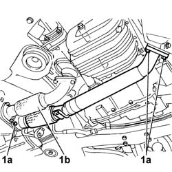
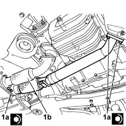

1076B82 EXHAUST PIPE BETWEEN RIGHT PRECONVERTER AND CATALYTIC CONVERTER - R.R.
- Path
- Procedures > 10 ENGINE > 1076 EXHAUST PIPES AND SILENCERS > 1076B EXHAUST PIPES AND SILENCERS > 1076B82 EXHAUST PIPE BETWEEN RIGHT PRECONVERTER AND CATALYTIC CONVERTER - R.R.
- Kind
- repair procedure (removal / refitting; the operation number is the code)
- Applies to
- engines: 3.0 V6, 3.2 V6; all production periods
- Interactive page
- https://sloeber94.github.io/elrnDB-lThss/en/#/187451
Applies to: engines: 3.0 V6, 3.2 V6; all production periods
 Removing
Removing
 Refitting
Refitting- Position the vehicle on a lift.
- Open the boot, remove the cover on the left hand side and disconnect the negative battery lead.
- Raise the vehicle
1. Undo the nuts (1a) fixing the flanges for the pipes (1b) between the left preconverter and the converter and remove the actual pipe complete with gaskets underneath.

Applies to: engines: 3.0 V6, 3.2 V6; all production periods
Refitting
Removing1. Position the pipe between the left preconverter and the converter complete with gaskets, then tighten the nuts (1a) fixing the pipe (1b) flanges to the recommended torque.
 | Value - daNm | Fastening | Component | Ø |
|---|---|---|---|---|
1a | 2.8 | Nut | EXHAUST PIPE MOUNTS/FASTENERS | M8 |

Applies to: engines: 3.0 V6, 3.2 V6; all production periods
- Lower the vehicle
- Connect the negative battery lead, then position the cover and close the boot.
- Remove the vehicle from the lift.